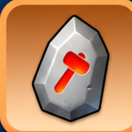

Снаряжение
Что усиливать в первую очередь и как не распылять редкие материалы.
Содержание
Снаряжение героев
На этой странице речь именно о снаряжении героев. Снаряжение губернатора работает по другой системе и прокачивается отдельно.
Снаряжение героя усиливает как характеристики самого героя, так и войска того типа, к которому он относится. Поэтому важно смотреть не только на общую мощность предмета, но и на то, какую характеристику он усиливает.
Четыре части снаряжения
- Головной убор / очки: повышает атаку и здоровье героя, а войскам соответствующего типа даёт смертоносность.
- Сапоги: также повышают атаку и здоровье героя и дают войскам смертоносность.
- Перчатки: повышают защиту и здоровье героя, а войскам дают здоровье.
- Пояс: также повышает защиту и здоровье героя и даёт войскам здоровье.
Что качать в первую очередь
Перчатки + пояс → здоровье войск.
Пехота принимает основной урон, поэтому её выживаемость особенно важна.
Головной убор / очки + сапоги → смертоносность.
Основная задача стрелков связана с нанесением урона.
Головной убор / очки + сапоги → смертоносность.
Базовый принцип такой же, как у стрелков.
Шесть главных предметов
Для основной боевой тройки в первую очередь получаем:
- Пехота: перчатки + пояс.
- Стрелок: головной убор + сапоги.
- Копейщик: головной убор + сапоги.
Остальные шесть предметов тоже полезны, но при ограниченных ресурсах их можно держать ниже основных и постепенно подтягивать позже. Такой подход особенно удобен для F2P и небольших донатеров.
Сколько комплектов развивать
Сначала достаточно хорошо прокачать три комплекта: один для основного героя-пехотинца, один для копейщика и один для стрелка.
При смене поколения снаряжение не нужно создавать заново: хороший комплект можно снять со старого героя и передать новому герою того же типа.
Для Арены позже можно постепенно развивать снаряжение четвёртого и пятого героя, но делать это в ущерб основной тройке на раннем этапе обычно невыгодно.
Усиление снаряжения
Обычное усиление повышает уровень предмета.
Для него используются Компоненты усиления опыта, а также ненужное снаряжение более низкого качества, которое можно использовать как материал опыта.
Не вкладывай много ресурсов во временное снаряжение низкого качества, если уже приближаешься к получению мифического.

Камни эссенции и Ковка мастерства
Камни эссенции используются для Ковки мастерства мифического снаряжения.
Ковка мастерства становится доступна после достижения Топки 20 и необходимого уровня усиления предмета. Она дополнительно увеличивает характеристики снаряжения.
Камни эссенции относятся к ценным и ограниченным ресурсам, поэтому в первую очередь их лучше направлять в те же ключевые предметы основной тройки, а не распределять между множеством героев.
Легендарное снаряжение
Когда мифическое снаряжение достигает уровня усиления 100 и Ковки мастерства 10, его можно повысить до легендарного красного снаряжения, потратив ещё 2 мифические части снаряжения.
После этого начинается следующая стадия развития снаряжения.
Мифрил
 Мифрил
МифрилМифрил нужен для дальнейшего усиления легендарного снаряжения. Он используется на ключевых этапах его развития, поэтому даже если ты ещё не дошёл до красного снаряжения, Мифрил лучше не расходовать и не игнорировать, когда появляется возможность его получить.
Что важнее: пехота или стрелки?
Здесь нет одного правила для всех режимов.
Для обычного PvP очень важно здоровье основной пехоты.
Для Медведя больший акцент на смертоносности стрелка может быстрее поднять наносимый урон и количество получаемых наград.
Поэтому правильнее не использовать жёсткое правило «пехота → стрелок → копейщик», а держать главным ориентиром шесть приоритетных предметов и уже внутри них учитывать основной режим игры.
Пехота → перчатки и пояс → здоровье.
Стрелки → головной убор и сапоги → смертоносность.
Копейщики → головной убор и сапоги → смертоносность.
Компоненты усиления опыта, Камни эссенции, мифическое снаряжение и позже Мифрил не распределяй случайно. Чем дальше развивается снаряжение, тем дороже исправлять раннее распыление ресурсов.